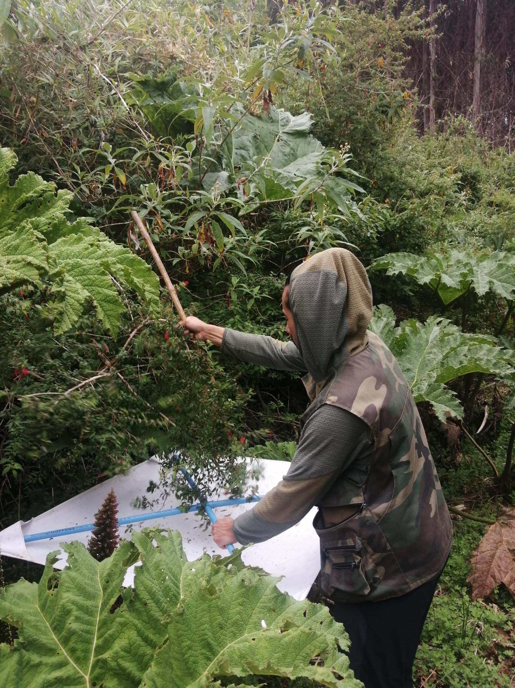

Investigación científica
Conocimiento producido y compartido.
Investigación que fortalece nuestra práctica y aporta a la comprensión de la biodiversidad.
- 2023
Catchpole, Sam & Carrera-Suárez, L. E.
Effects of an extreme drought (2019–2020) on the feeding ecology of Bubo magellanicus.
PeerJ 11: e15020.
Ver publicación ↗ - 2021
Carrera-Suárez, L. E. & Catchpole, Sam
Effects of electrofishing on tadpoles of Calyptocephalella gayi in a low-order stream of south-central Chile.
Boletín Chileno de Herpetología 8: 67–89.
- 2010–11
Carrera-Suárez, L. E. & J. N. Artigas
Espermatecas desconocidas de dos especies del género Ommatius.
Boletín de la Sociedad de Biología de Concepción 80: 21–26.
- 2011
Artigas, J. N. & L. E. Carrera-Suárez
Previously Non-Illustrated Genitalia of Some Known Asilinae Species.
Journal of the Entomological Research Society 13(2): 1–14.
- 2011
Carrera-Suárez, L. E., T. S. Olivares & A. O. Angulo
Catálogo de los Noctuidae de la Isla Robinson Crusoe, con nuevos registros y datos taxonómicos.
SHILAP Revista de Lepidopterología 39(153): 87–98.
- 2010
Carrera-Suárez, L. E., A. O. Angulo & T. S. Olivares
Nueva especie de Pseudoleucania endémica para la Isla Robinson Crusoe.
Gayana 74(1): 19–22.
Ciencia aplicada
La investigación como base de la consultoría.
La experiencia científica permite observar con mayor precisión, seleccionar metodologías pertinentes e interpretar los resultados dentro del contexto ecológico de cada proyecto.
Ese estándar se refleja tanto en el trabajo de campo como en la identificación taxonómica y la elaboración de información técnica.
Capacidades técnicas
Transformamos conocimiento en soluciones.
Conoce cómo aplicamos esta experiencia en nuestros servicios ambientales.